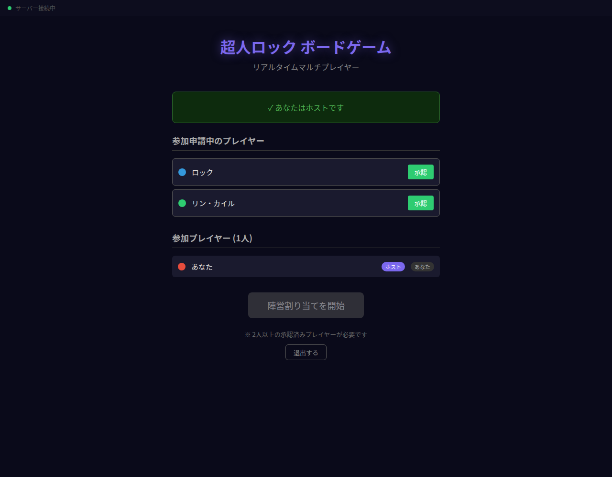
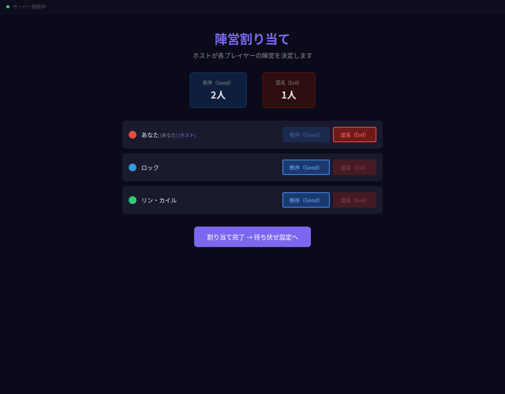
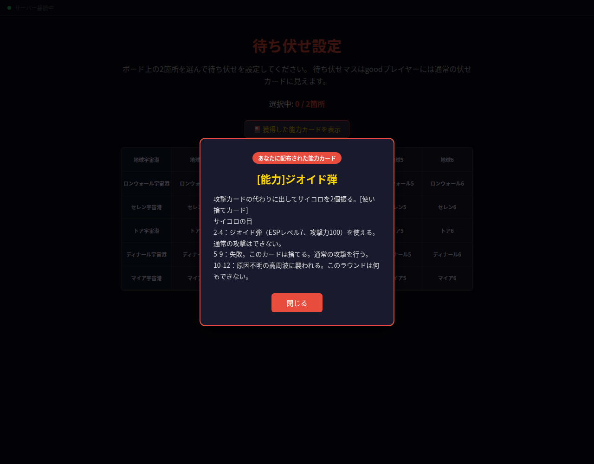
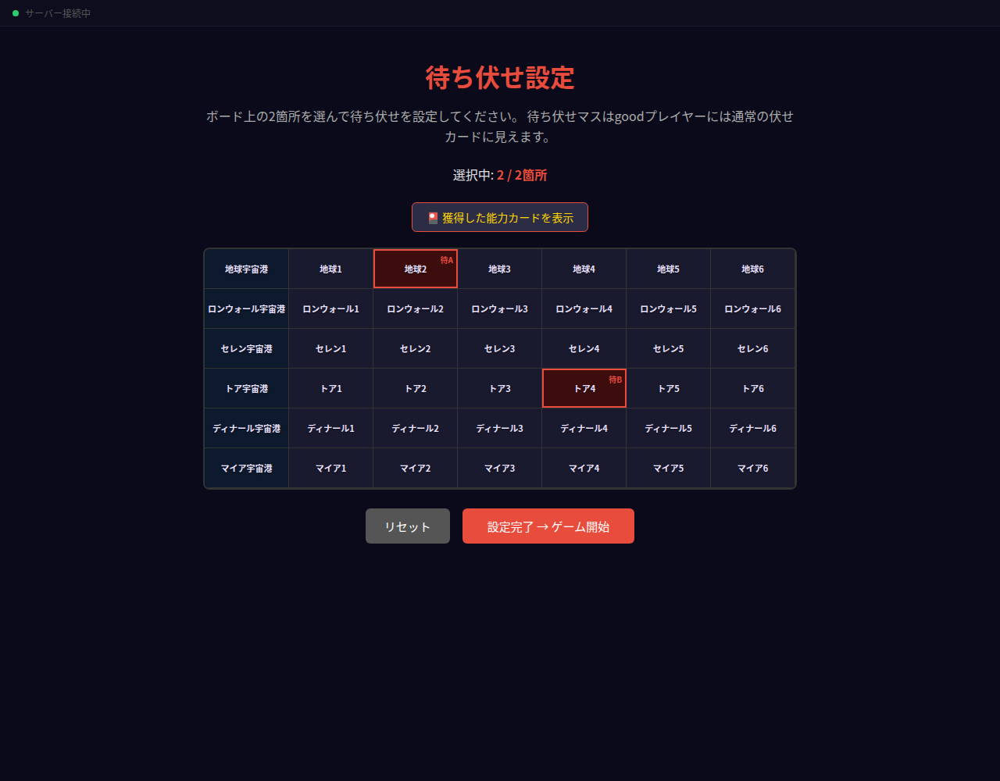
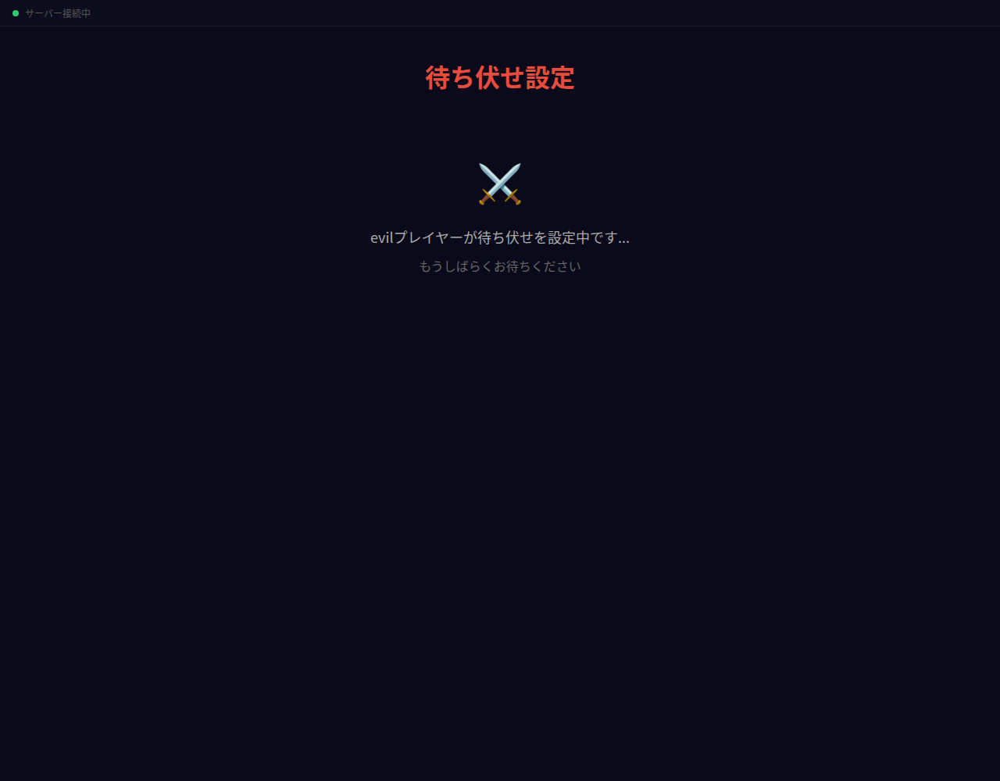
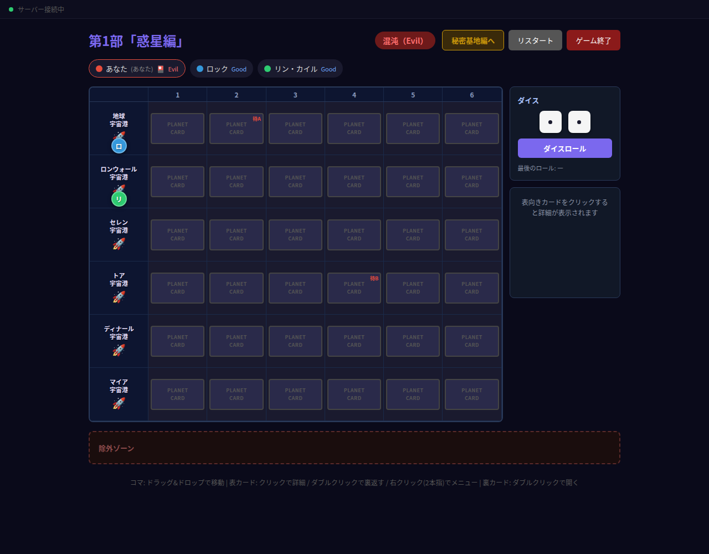
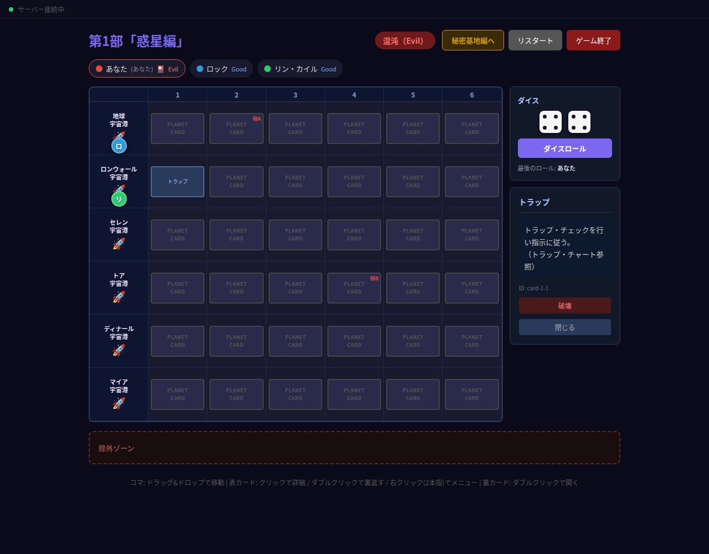
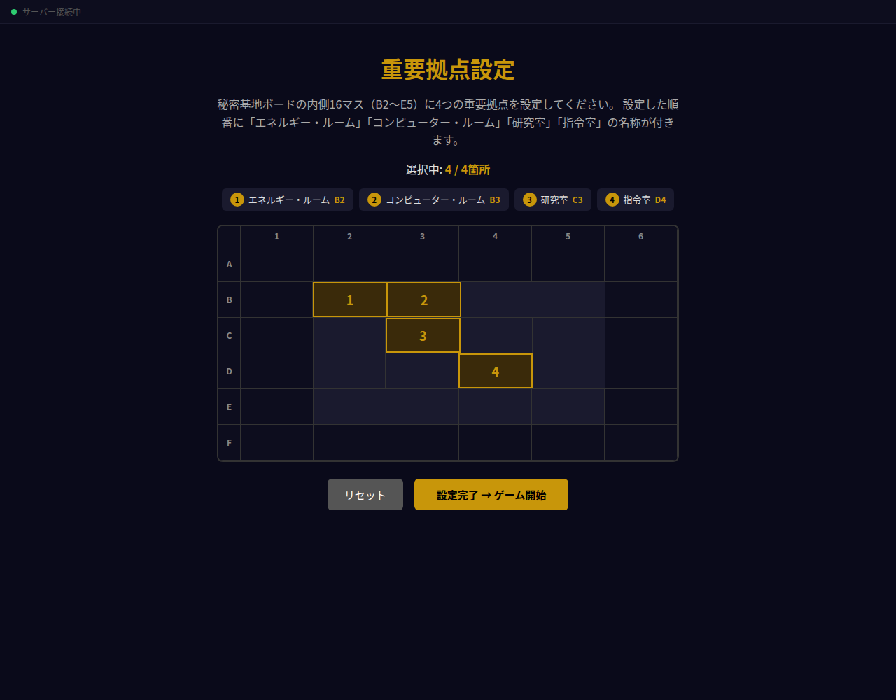
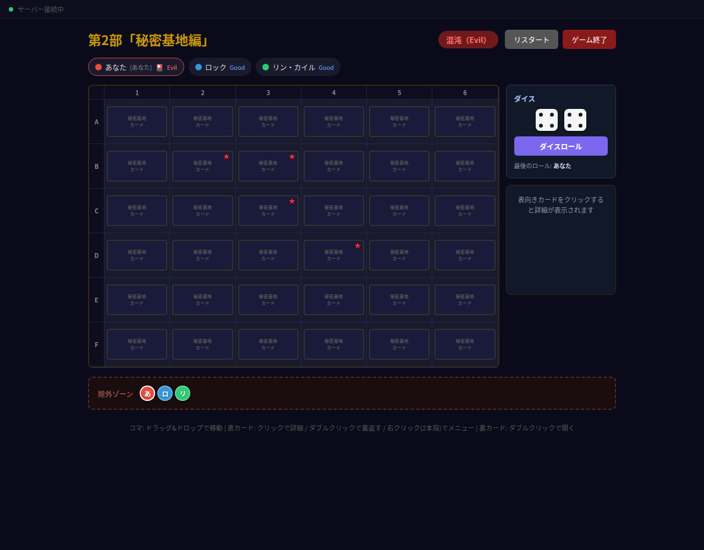
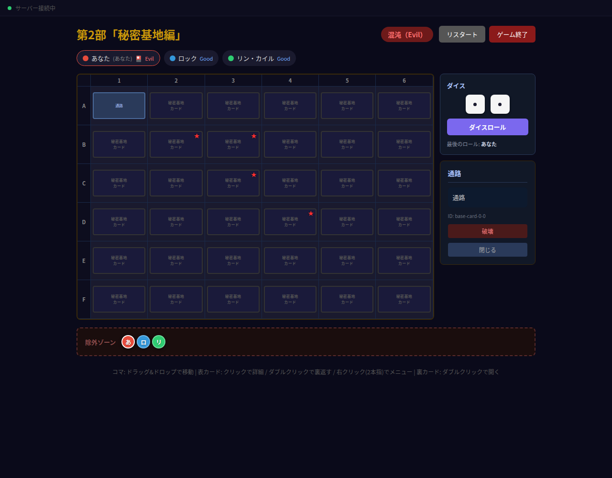

1ゲーム概要
「超人ロック」をテーマにした非対称対戦ボードゲームをオンラインでプレイするためのサポートツールです。
各プレイヤーが手元にゲームを所持していて手札の管理などは手元で行うことが前提になっています。
CHARACTER BOARD GAME超人ロック公式サイト
- 人数：2〜10人
- 構成：第1部「惑星編」（6×7ボード）→ 第2部「秘密基地編」（6×6ボード）の2部構成
- 進行役：最初に参加した人がホストになり、フェーズの進行・リスタート・終了を操作します
- 端末：PC・スマホ・タブレットのブラウザで動作（同じ画面をマウスでもタッチでも操作可能）
- 同期：カード操作・コマ移動・ダイスはすべて全員の画面に即座に反映されます
陣営はシルエットの陣営で全員に公開されます。「誰が Good で誰が Evil か」は秘密ではありません。「Special」はツール上では「good」に設定します。
秘密になるのは 待ち伏せの位置・能力カードの中身・重要拠点・各 Evil に配られた能力カード です。
2ゲームの流れ
ゲームは次の順に進みます。各フェーズへの移行はホスト（または Evil プレイヤー）が操作します。
① ロビー→
② 陣営割り当て→
③ 待ち伏せ設定→
④ 惑星編→
⑤ 重要拠点設定→
⑥ 秘密基地編
※ ホストはどのフェーズからでも「リスタート」（プレイヤーを維持してロビーへ）／「ゲーム終了」（全リセット）が行えます。
3ロビー（参加・承認）
ブラウザでゲームのURLを開き、プレイヤー名を入力して「参加」を押します。

ロビー画面（ホスト視点）。申請中のプレイヤーを「承認」して参加させる。
- 最初に参加した人が自動的にホストになります。
- 後から参加した人は「参加申請中」となり、ホストが「承認」を押すと参加できます。
- 承認済みプレイヤーが2人以上になると、ホストの「陣営割り当てを開始」ボタンが有効になります。
- ロビーの間は「参加をキャンセル」／「退出する」で抜けられます（ゲーム開始後は退出できません）。
4陣営割り当て
ホストが各プレイヤーに 秩序（Good） または 混沌（Evil） を割り当てます。

ホストが各プレイヤーの陣営ボタンを押して割り当てる。割り当て結果は全員が確認できる。
- 全員に陣営を割り当て、かつ Evil が1人以上 いると「割り当て完了 → 待ち伏せ設定へ」が押せます。
- ホスト以外のプレイヤーには「ホストが割り当て中です」と表示され、決定された陣営がそのまま見えます。
5待ち伏せ設定
このフェーズでの操作は陣営によって異なります。
Evil 能力カードの受け取り
待ち伏せ設定画面に入ると、自分に配られた能力カードがポップアップで表示されます（自分だけに見えます）。

Evil プレイヤーには能力カードが1枚配られる。「閉じる」で閉じられ、後から再表示も可能。
Evil 待ち伏せの設定
ボード上の2マスをクリック（タップ）して待ち伏せを仕掛けます。

選んだマスに「待A」「待B」が付く。2箇所選ぶと「設定完了 → ゲーム開始」が押せる。
- 宇宙港のマス（左端の列）には設定できません。
- 同じマスをもう一度押すと解除、「リセット」で全解除できます。
- 複数の Evil がいる場合、設定はリアルタイムで全 Evil に共有されます。
- 「🎴 獲得した能力カードを表示」ボタンで、配られたカードをいつでも見直せます。
Good 待機
Good プレイヤーには待機画面が表示されます。Evil が待ち伏せを仕掛けている間、内容は見えません。

Good 側の画面。Evil の設定が終わるのを待つ。
6惑星編（第1部）
6行×7列のボードでプレイします。Good のコマは左端の宇宙港に配置された状態でスタートします。

惑星編のボード。左端が宇宙港（🚀）、右側にダイスとカード詳細パネル、下に除外ゾーン。
コマの移動
- PC：コマをドラッグ&ドロップで別のマスへ移動します。
- スマホ/タブレット：コマを長押ししてドラッグします。
- コマを下部の「除外ゾーン」へ動かすと、盤上から除外された扱いになります。
カードの操作
- 表裏を返す：カードをダブルクリック／ダブルタップします。
- 内容を見る：表向きのカードを1回クリック／タップすると、右側の詳細パネルに内容が表示されます（裏向きのカードを開くと自動で表示されます）。
- カードを破壊／元に戻す：表向きカードを右クリック（スマホは2本指タップ）でメニューを出すか、詳細パネルの「破壊」「元に戻す」ボタンを使います。

カードを開くと右パネルに詳細が表示される。上部のダイスパネルで「ダイスロール」も行える。
ダイス
右上の「ダイス」パネルの「ダイスロール」ボタンを押すと、サイコロ2個が振られます。
- 出目はサーバーが決めて全員の画面に同期されます。回転演出のあとに結果が確定します。
- 「最後のロール」に、直前に振った人の名前が表示されます。
- ダイスは全員が振れます。
Evil プレイヤー一覧の自分の名前（🎴付き）をクリックすると、配られた能力カードをいつでも見直せます。
ホスト 画面右上のボタンで「秘密基地編へ」進む／「リスタート」／「ゲーム終了」が行えます。
7重要拠点設定
ホストが「秘密基地編へ」を押すと、まず重要拠点の設定に移ります。
Evil 重要拠点の設置
秘密基地ボードの内側16マス（B2〜E5）に、4箇所の重要拠点をクリックして設定します。

設定した順に「エネルギー・ルーム」「コンピューター・ルーム」「研究室」「指令室」の名称が付く。
- 最外周（A行・F行・1列・6列）には設定できません。
- 4箇所すべて設定すると「設定完了 → ゲーム開始」が押せます。
- Good プレイヤーには待機画面が表示されます。
8秘密基地編（第2部）
6行×6列（行 A〜F、列 1〜6）の秘密基地ボードでプレイします。基本操作は惑星編と同じです。

秘密基地編のボード。第2部開始時は全員のコマが除外ゾーンにリセットされる。
- コマの移動・カードの表裏・詳細表示・破壊・ダイスの操作は惑星編と同じです。
- 第2部の開始時、全員のコマは除外ゾーンに置かれた状態になります。そこから盤上へ動かして使います。
- Evil には重要拠点のカードに★マークが表示されます。Good はそのカードを表にしたときに判明します。

カードを開くと右側に詳細が表示される。ダイスも惑星編と同様に利用できる。
9操作早見表
| やりたいこと | PC（マウス） | スマホ／タブレット |
|---|
| コマを移動する | ドラッグ&ドロップ | 長押ししてドラッグ |
| コマを除外する | 下部の「除外ゾーン」へ移動 |
| カードの内容を見る | クリック | タップ |
| カードの表裏を返す | ダブルクリック | ダブルタップ |
| カードを破壊／元に戻す | 右クリック → メニュー | 2本指タップ → メニュー |
| または詳細パネルの「破壊」「元に戻す」ボタン |
| ダイスを振る | 右上ダイスパネルの「ダイスロール」 |
| 配られた能力カードを見るEvil | プレイヤー一覧の自分の名前（🎴）をクリック |
10困ったときは
- 画面が固まった／間違えてリロードした：心配いりません。プレイヤー情報はブラウザに保存されており、同じURLを開き直すと自動で元のゲームに復帰します。
- 接続状態の確認：画面左上の丸印で確認できます（緑＝接続中 / 赤＝未接続）。
- 操作した内容が他の人に反映されない：接続が切れている可能性があります。緑表示になっているか確認し、必要ならページを再読み込みしてください。
- 最初からやり直したい：ホストが「リスタート」を押すと、参加メンバーはそのままでロビーに戻ります。